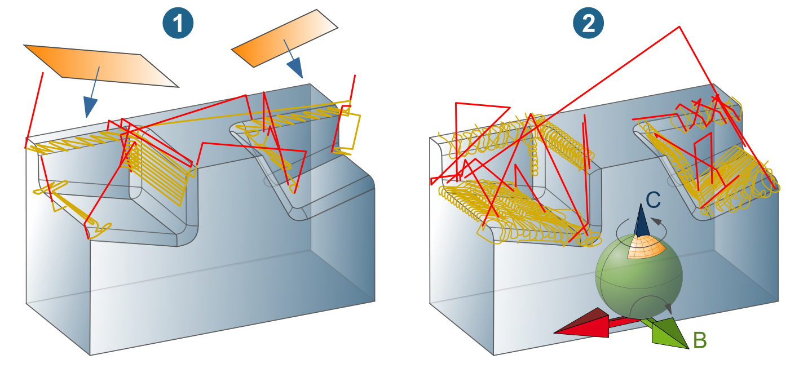
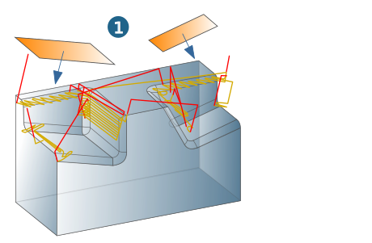
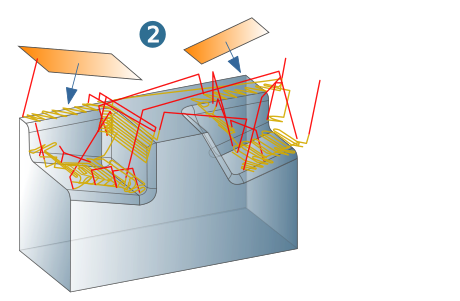
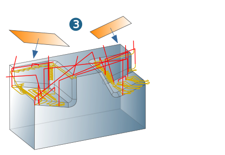

5 axes
Define strategies and parameters for 5-axis machining.
Inclination strategy
In Plane mode, align the tool orientation to the surface normals of the selected planar surfaces and define the machining area by limiting the plane.
If the Use plane boundary option is enabled, the plane limit is projected onto the milling area from the perspective of the surface normals. If the Use plane boundary option is not enabled, the machining is not limited.
Use the 3D range mode to specify an upper and lower angle limit for the B and C axes as well as a Max. angle increment.
Use the Auto individual mode to automatically calculate a boundary from the frame view and the optimum tilt angle for the C axis. In addition, the tool orientation can be individually controlled using an angle range for the B axis. Only the area within the boundary is machined.
Graphical feedback
In Planes mode: The position direction for the tool (surface normal) is displayed as graphical feedback (1). The selected planar surfaces (2) are numbered and displayed in the job definition in the order in which they were selected. Double-click the entry to reverse the orientation of the surface or use the Reverse or Reverse all function on the shortcut menu. To delete the selection, uncheck the Selected checkbox or use the Delete function on the shortcut menu.
In the 3D range mode: The permissible maximum angle range for the B axis and C axis is displayed as graphical feedback in the form of a selected surface (3) on a ball based on the defined frame.
|  |
Example:
(1) Tilt strategy: Planes, (2) Tilt strategy: 3D range,
B axis from 0 to 45 degrees, C axis from 45 to 135 degrees,
Avoidance mode: Skip all, Tool: Bullnose endmill.
Avoidance mode
Specify the collision avoidance mode.
Select the Skip all option (1) to only machine areas that are collision-free from the perspective of the tool axis.
|  |
Use the Avoid all option (2) to move the tool laterally so that the areas to be machined are collision-free from the perspective of the tool axis.
|  |
Use the Add vertical / first skip - last avoid option to start the machining with a vertical inclination (from frame orientation). Material is removed up to a first (possible) collision. Afterwards, machining takes place with the inclination of the defined planes. At the end of the machining, a vertical inclination is added again (from frame orientation). Material is removed up to the first collision. Afterwards, the tool is moved until it is collision-free.
|  |
Sort
Define the machining sequence for the Planes machining strategy. Use Selection order to control the machining in the order of the selected planar surfaces.
Use Best stock removal to control the machining so that the inclination from whose direction the greatest stock removal is expected is selected first.
For the 3D range machining strategy, use the Limit output inclinations option to specify the number of Max. output inclinations.